The roster
Meet the
Lanterns
The Lantern legacy — Corps members, their rivals, and Alan Scott, the magical hero who started it all.
The original Lantern: Starheart & Justice Society
Alan Scott carries a magical legacy. His place in the Justice Society is distinct from membership in the interstellar Green Lantern Corps.

Green Lantern Corps

Hal Jordan
Test pilot and independent-minded Green Lantern.

John Stewart
Architect, Marine and Green Lantern.

Guy Gardner
An outspoken Earth Lantern.

Kyle Rayner
An artist carrying the Green Lantern legacy.

Kilowog
The Corps’ demanding training instructor.

Tomar-Re
A Xudarian veteran of Sector 2813.

Salaak
The Corps’ liaison to the Guardians.

Arisia Rrab
A Green Lantern from Graxos IV.

Soranik Natu
A surgeon drawn into Lantern service.

Sodam Yat
A Daxamite Lantern linked to an older prophecy.

Katma Tui
Korugar’s Lantern and John Stewart’s mentor.

Ch'p
A small Lantern from H’lven.

Abin Sur
The Lantern whose ring chooses Hal Jordan.
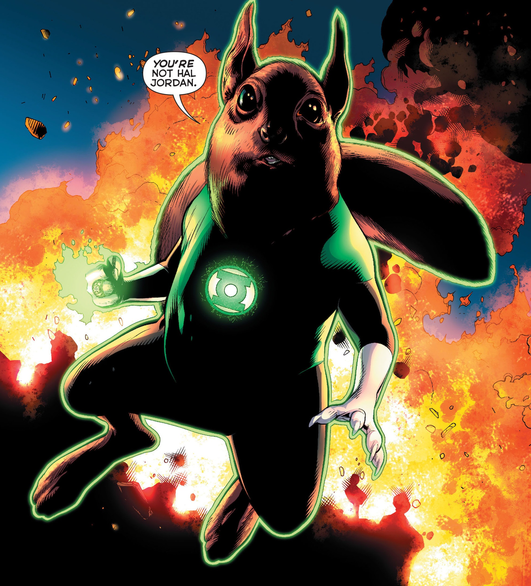
B'dg
A later H’lvenite Green Lantern.
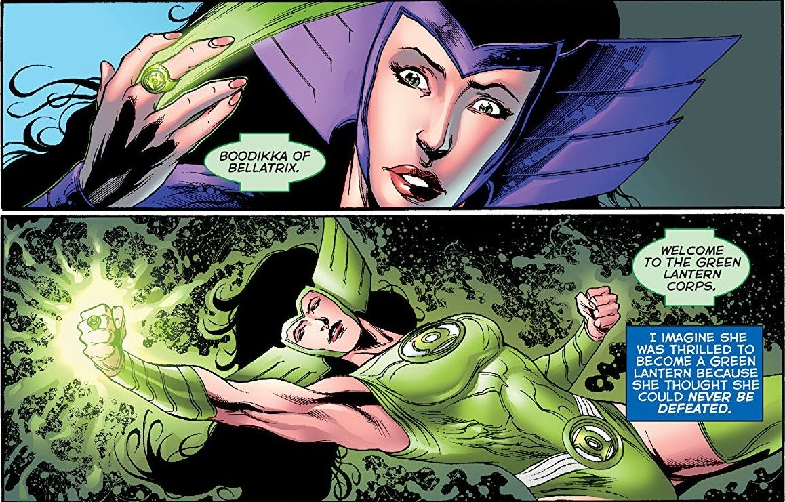
Boodikka
A Bellatrixian warrior in the Corps.
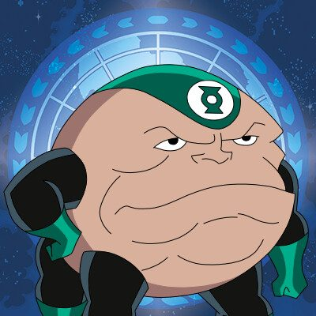
Galius Zed
A veteran Lantern from Noc’sag.
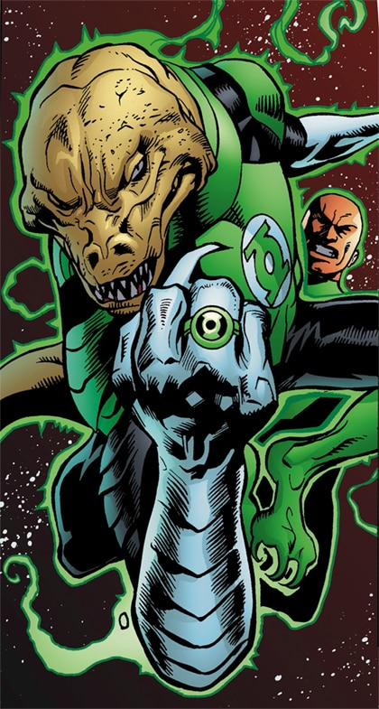
Isamot Kol
A soldier learning to work with former enemies.

Jessica Cruz
A Green Lantern living with anxiety.
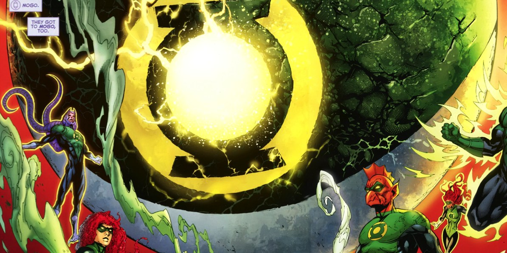
Mogo
A living world within the Corps.
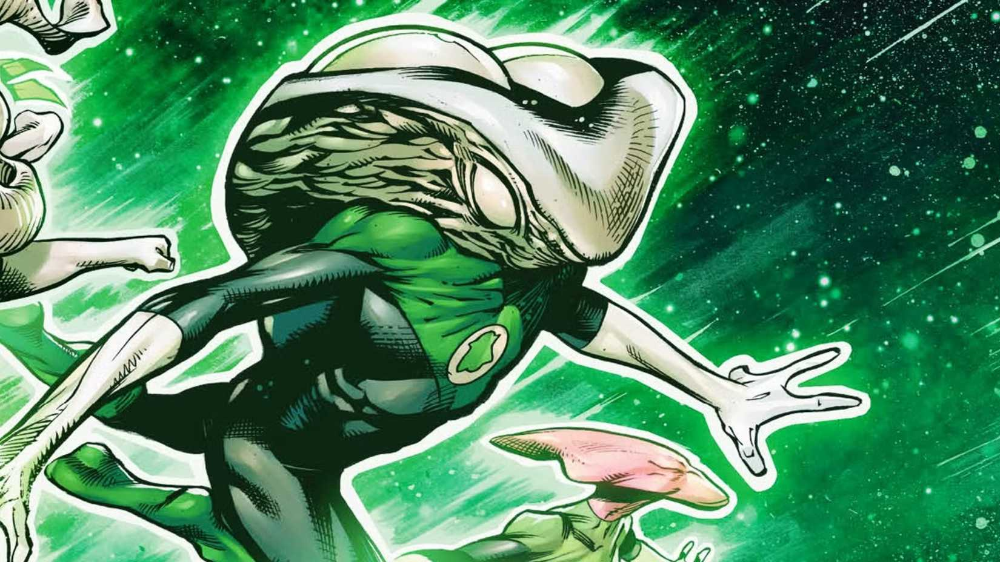
Rot Lop Fan
The Lantern who understands the Corps through sound.
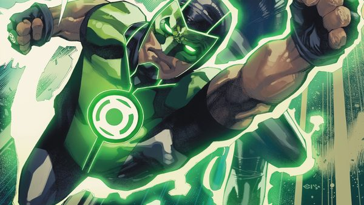
Simon Baz
Dearborn’s Green Lantern.
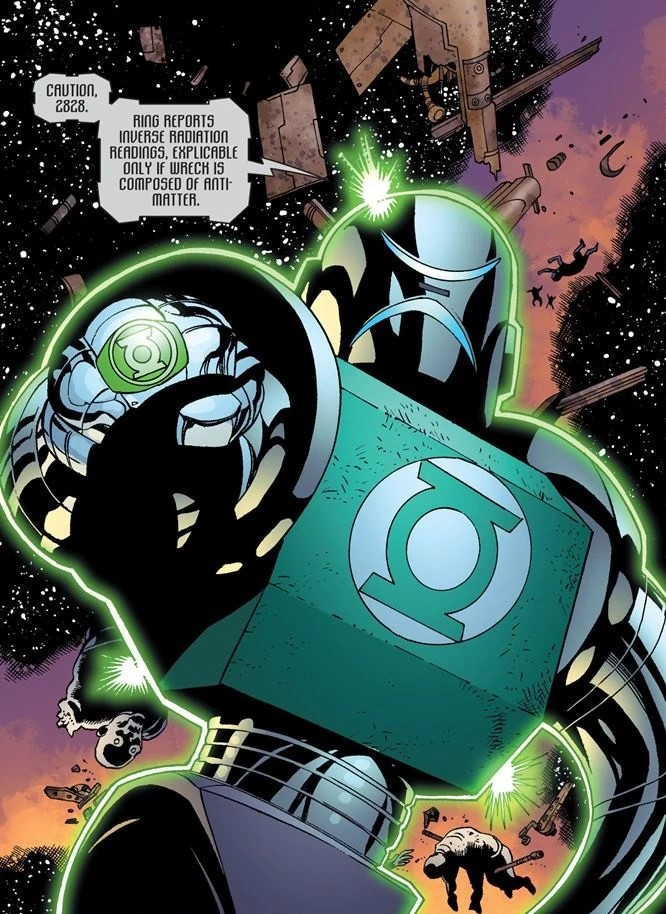
Stel
A sentient robotic Lantern from Grenda.
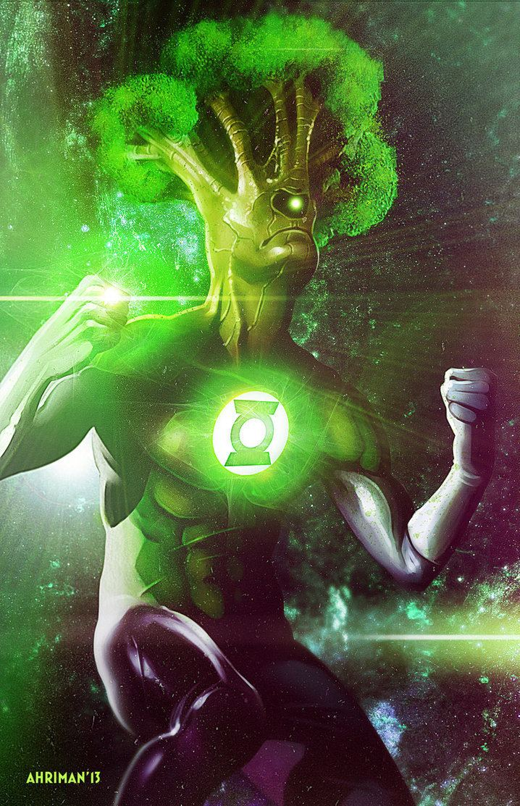
Medphyll
A plant-based Lantern from J586.
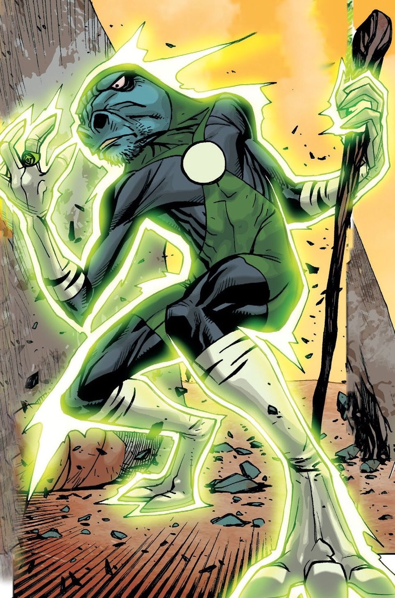
Vath Sarn
A Rannian soldier in the rebuilt Corps.

Jo Mullein
A detective with a different kind of power ring.

Jade
Alan Scott’s daughter and a Starheart hero.
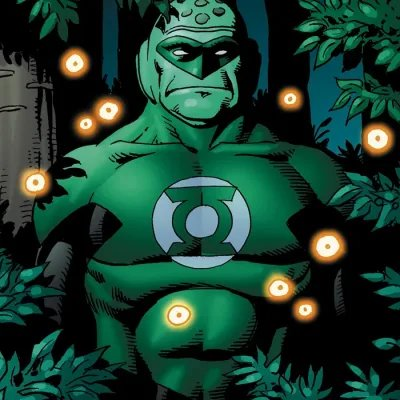
Green Man
A Lantern seeking individuality beyond Uxor.
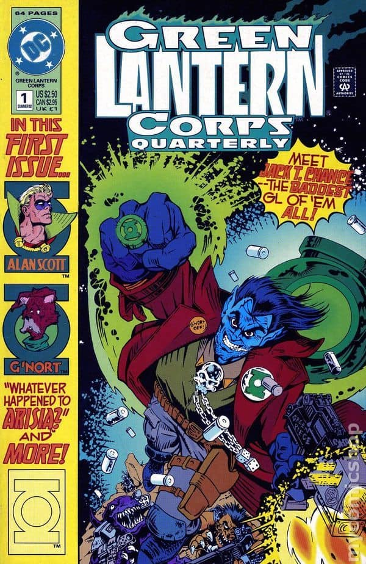
Jack T. Chance
An unconventional Lantern on a violent world.
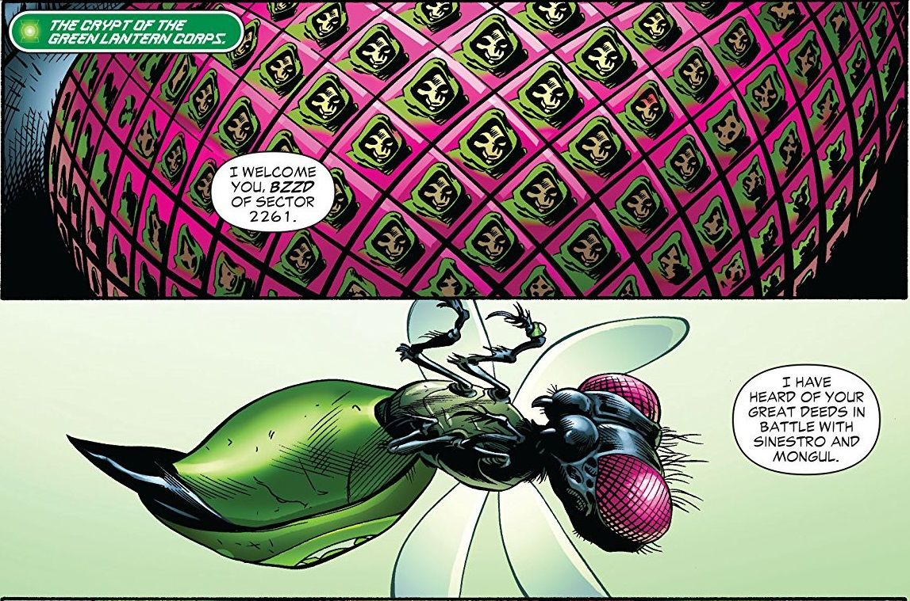
Bzzd
A tiny Lantern with outsized constructs.
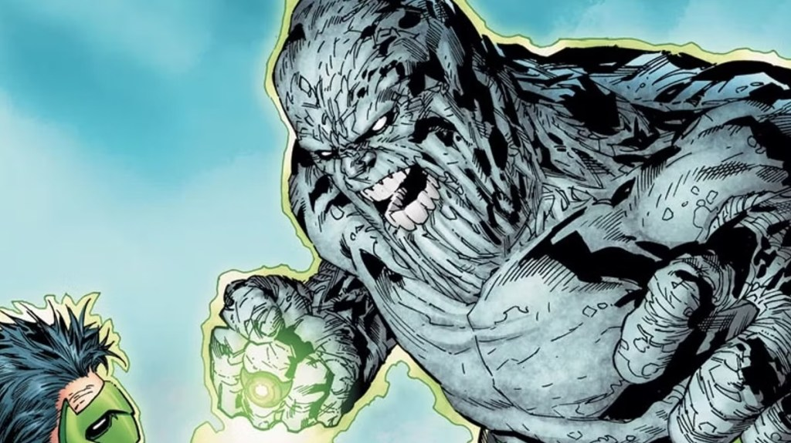
Hannu
A Lantern who prefers his own strength.
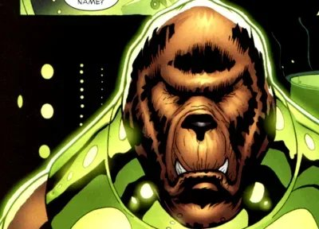
Voz
A Lantern guarding Oa’s Sciencells.
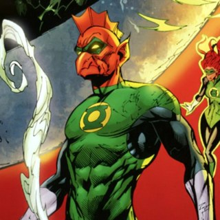
Tomar-Tu
A Xudarian bearing a familiar legacy.
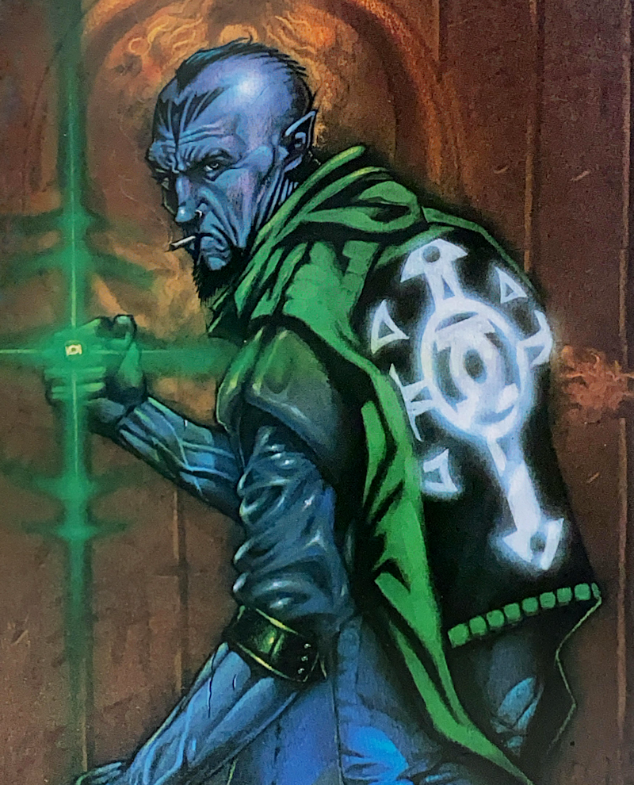
Ash
A Lantern whose stories turn toward horror.
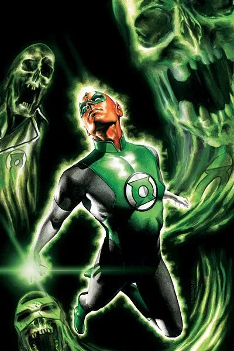
Saarek
A Lantern associated with the dead.
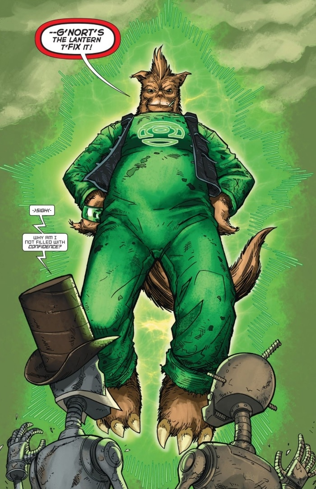
G'nort
The comic side of Lantern heroism.
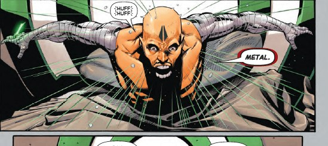
Graf Toren
A Karaxian member of the Lost Lanterns.
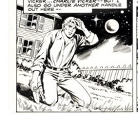
Charlie Vicker
An actor taking on a real heroic responsibility.
Sinestro Corps

Sinestro
Order through the yellow light of fear.

Arkillo
The Sinestro Corps’ trainer and enforcer.

Lyssa Drak
The Sinestro Corps’ lorekeeper.

Karu-Sil
A fear-wielder with a ring-made animal pack.

Despotellis
Fear at the microscopic level.
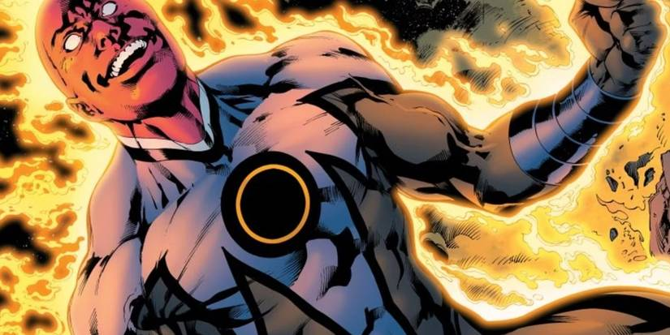
Amon Sur
An uneasy heir to Abin Sur’s legacy.
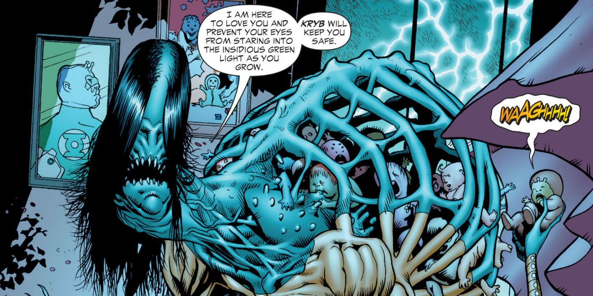
Kryb
A Sinestro Corps threat to Lantern families.
Red Lantern Corps

Atrocitus
Founder of the Red Lantern Corps.

Bleez
A winged warrior of the Red Lanterns.

Dex-Starr
An Earth cat with a red ring.

Zilius Zox
A Noc’sagian bearer of the red light.

Rankorr
A human perspective inside the rage Corps.

Skallox
A Red Lantern with a violent past.

Vice
A pincer-jawed Red Lantern.

Laira
A career crossing green and red.
Orange Lantern Corps


Blue Lantern Corps


Star Sapphires


Black Lantern Corps


Artwork credits (70 images)
Credits refer to the illustrations shown here. Open a record for sources, adaptations and unresolved details. Some artwork and source pages contain story spoilers.
- Alan Scott — Alan Scott: The Green Lantern #1 (2023), David Talaski cover, cropped detail. David Talaski (cover art).
- Hal Jordan — Hal Jordan and the Green Lantern Corps #45 (2018), Tyler Kirkham variant cover, cropped detail. Tyler Kirkham (cover pencils and inks); Arif Prianto (cover colors).
- John Stewart — Dark Nights: Death Metal #4 (2020), Stanley “Artgerm” Lau John Stewart variant cover, cropped detail. Stanley “Artgerm” Lau (cover art and colors).
- Guy Gardner — Artist credit unconfirmed.
- Kyle Rayner — Green Lantern (2023) #33 / legacy #600 (2026), David Nakayama variant cover, cropped detail. David Nakayama (cover art and colors).
- Kilowog — Artist credit unconfirmed.
- Tomar Re — Artist credit unconfirmed.
- Salaak — Artist credit unconfirmed.
- Arisia Rrab — Artist credit unconfirmed.
- Soranik Natu — Artist credit unconfirmed.
- Sodam Yat — Artist credit unconfirmed.
- Katma Tui — Katma Tui, Green Lantern of Korugar — Upper Deck Vs. System: DC Green Lantern Corps, card DGL-015 (2005). Phil Noto (card illustration).
- Chp — Injustice: Gods Among Us: Year Two (2014), digital chapter #10, collected in print issue #5, interior panel. Bruno Redondo (pencils); Julien Hugonnard-Bert (inks); Rex Lokus (colors).
- Abin Sur — Hal Jordan and the Green Lantern Corps #9 (2016), interior splash, cropped detail. Rafa Sandoval (interior pencils); Jordi Tarragona (interior inks); Tomeu Morey (interior colors).
- Bdg — Green Lantern (2011) #15 (released December 2012; February 2013 cover date), interior panel. Doug Mahnke (pencils); Alex Sinclair (colors).
- Boodikka — Green Lantern Corps (2006) #63 (2011), Now and Forever! chapter one, story page 2, bottom two panels. Joe Prado (pencils and inks); Hi-Fi (colors).
- Galius Zed — Artist credit unconfirmed.
- Isamot Kol — Artist credit unconfirmed.
- Jessica Cruz — Green Lanterns #7 (2016), Emanuela Lupacchino variant cover, cropped detail. Emanuela Lupacchino (cover art); Tomeu Morey (cover colors).
- Mogo — Artist credit unconfirmed.
- Rot Lop Fan — Artist credit unconfirmed.
- Simon Baz — Artist credit unconfirmed.
- Stel — Artist credit unconfirmed.
- Medphyll — Artist credit unconfirmed.
- Vath Sarn — Artist credit unconfirmed.
- Jo Mullein — Artist credit unconfirmed.
- Jade — Artist credit unconfirmed.
- Green Man — Artist credit unconfirmed.
- Jack T Chance — Green Lantern Corps Quarterly #1 (1992), cover. Flint Henry (cover art).
- Bzzd — Artist credit unconfirmed.
- Hannu — Artist credit unconfirmed.
- Voz — Artist credit unconfirmed.
- Tomar Tu — Artist credit unconfirmed.
- Ash — Ash — Green Lantern Corps Quarterly #7 (1993), painted cover detail. Tony Harris (cover painting).
- Saarek — Green Lantern Corps (2006) #28 (2008), cover artwork. Rodolfo Migliari (cover art).
- Gnort — Artist credit unconfirmed.
- Graf Toren — Artist credit unconfirmed.
- Charlie Vicker — Artist credit unconfirmed.
- Sinestro — Green Lantern (2011) #52 (2016), New 52 homage variant cover artwork. Billy Tan (variant cover pencils and inks); Alex Sinclair (variant cover colors).
- Arkillo — Artist credit unconfirmed.
- Lyssa Drak — Lyssa Drak — fan-art digital painting (signed 2016). Arkenstellar (digital illustration).
- Karu Sil — Artist credit unconfirmed.
- Despotellis — Artist credit unconfirmed.
- Amon Sur — Artist credit unconfirmed.
- Kryb — Artist credit unconfirmed.
- Atrocitus — Artist credit unconfirmed.
- Bleez — Lady Bleez (Earth-27 fan project), Phil Cho commission (2018). Phil Cho (illustration).
- Dex Starr — Artist credit unconfirmed.
- Zilius Zox — Artist credit unconfirmed.
- Rankorr — Artist credit unconfirmed.
- Skallox — Artist credit unconfirmed.
- Vice — Artist credit unconfirmed.
- Laira — Artist credit unconfirmed.
- Larfleeze — Artist credit unconfirmed.
- Glomulus — Artist credit unconfirmed.
- Saint Walker — Artist credit unconfirmed.
- Brother Warth — Artist credit unconfirmed.
- Sister Sercy — Sister Sercy — Blackest Night #0 (2009), Blue Lantern Corps profile detail. Doug Mahnke (profile pencils); Tom Nguyen (profile inks); Nei Ruffino (profile colors).
- Ganthet — Ganthet (Earth-27 fan project), commission (2018). Phil Cho (illustration).
- Sayd — Artist credit unconfirmed.
- Brother Hynn — Blackest Night #0 (2009), Blue Lantern Corps profile, cropped detail. Doug Mahnke (profile pencils); Tom Nguyen (profile inks); Nei Ruffino (profile colors).
- Indigo 1 — Artist credit unconfirmed.
- Munk — Green Lantern Corps (2006) #43 (2010), José Ladrönn variant cover, cropped detail. José Ladrönn (variant cover art).
- Carol Ferris — Green Lantern Corps #4 (2025), Jonboy Meyers variant cover, cropped detail. Jonboy Meyers (cover illustration).
- Fatality — Artist credit unconfirmed.
- Queen Agapo — Artist credit unconfirmed.
- Miri Riam — Artist credit unconfirmed.
- Black Hand — Green Lantern (2011) #11 (2012), main cover, cropped detail. Doug Mahnke (cover pencils); Christian Alamy (cover inks); Alex Sinclair (cover colors).
- Nekron — Artist credit unconfirmed.
- Scar — Artist credit unconfirmed.